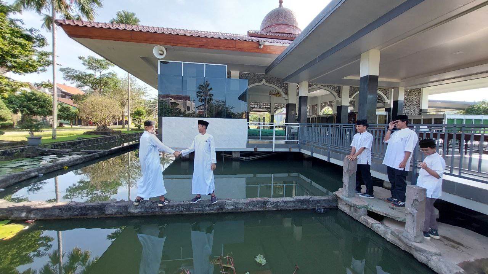
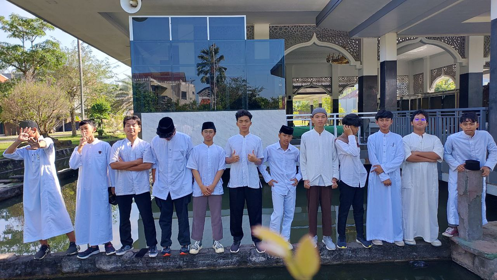
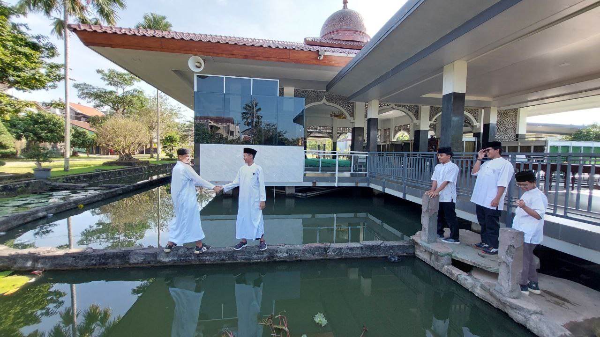
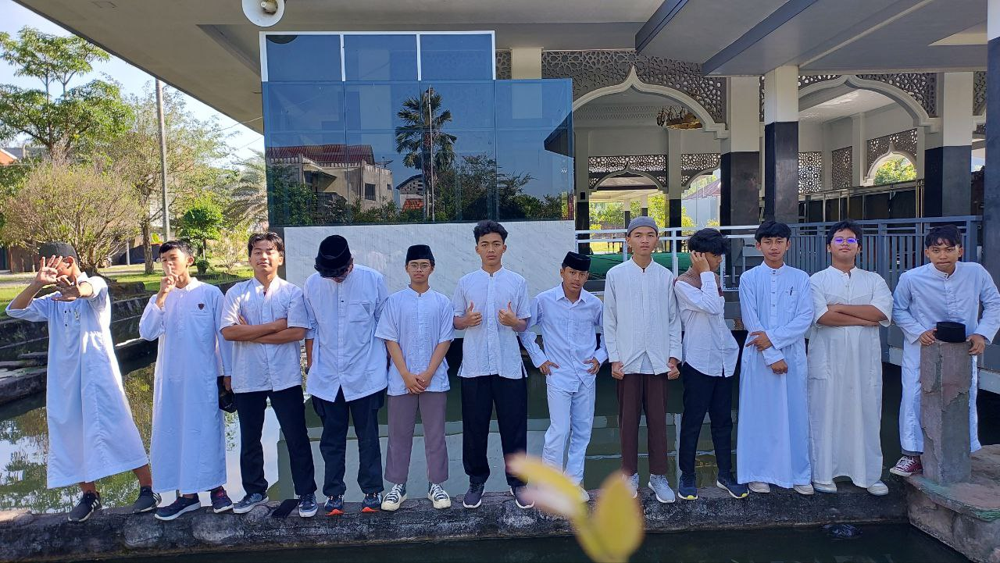
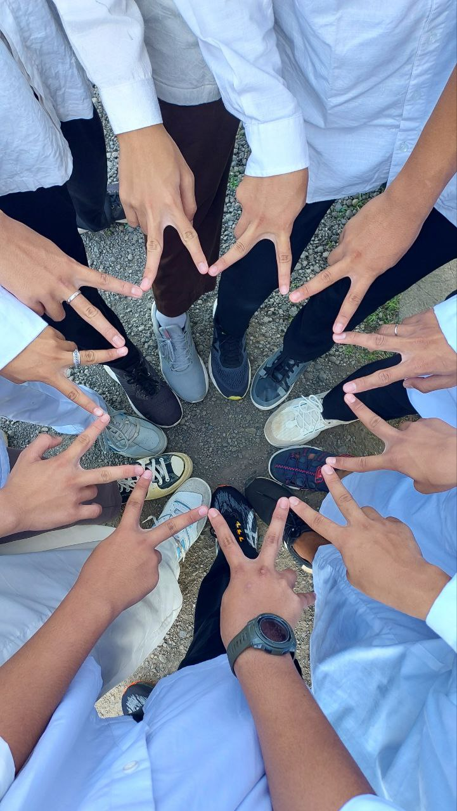
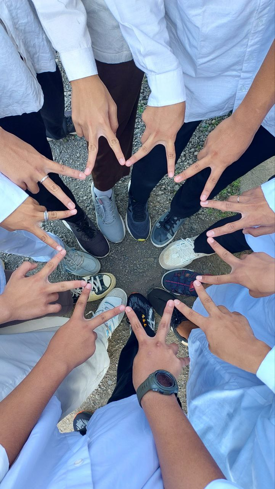

Halo, saya
Surya
Creative Student • Web Developer • Designer
Saya adalah seorang pelajar yang memiliki ketertarikan besar pada dunia teknologi, khususnya pengembangan web dan desain. Saya senang belajar hal baru, mengasah logika melalui coding, serta menciptakan tampilan website yang modern, rapi, dan nyaman digunakan oleh banyak orang.
Lihat Galeri

 



 
